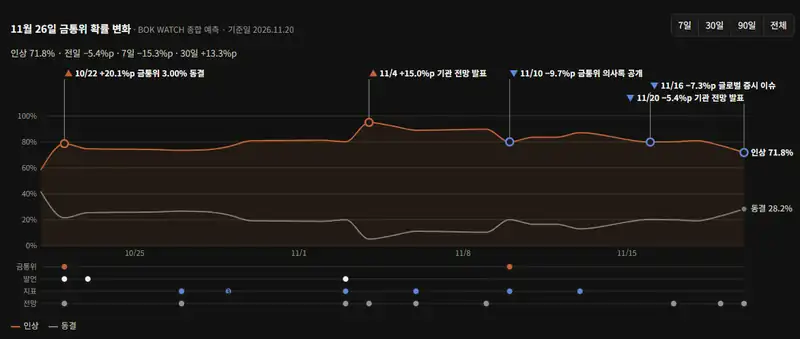

[BOK워치] 증시 폭락, 금리 2~3번 올린 효과…한은 추가 인상에 ‘이중 긴축’ 우려

주식시장은 무너지고, 금리는 더 오를 전망입니다.
오늘 중앙일보에 쓴 기사의 첫 문장입니다. 주가가 급락하면 증시 투자자들만 손해를 보는 것으로 생각하기 쉽습니다. 하지만 손실이 커지면 가계는 소비를 줄이고 기업은 투자를 미루게 됩니다. 주식시장에서 시작된 충격이 실물경제로 번지는 겁니다. 주식을 당장 팔지 않더라도 자산이 줄었다고 느끼는 것만으로 지갑을 닫을 수 있습니다.
23일 코스피는 3.31% 하락한 4708.54로 마감했습니다. 지난주에만 7.9% 급락한 데 이어 낙폭을 더 키웠습니다. 그런데 한국은행은 사흘 뒤인 26일 기준금리를 또 올릴 것으로 전망됩니다. 증시 폭락에 따른 소비 위축과 금리 인상에 따른 이자 부담이 겹치는 ‘이중 긴축’이 오늘 기사의 문제의식입니다.
씨티은행이 계산한 숫자가 충격적입니다. 올해 하반기 국내 가계가 주식에서 입은 자본손실을 약 563조원으로 추정했습니다. 한 해 명목 국내총생산(GDP)의 19%, 민간소비의 37%에 해당합니다. 상반기에 쌓였던 주식 평가이익 579조원도 상당 부분 사라졌다는 계산입니다.
더 중요한 것은 소비입니다. 씨티는 자산손실에 따른 소비 감소액을 약 8조4000억원으로 추산했습니다. 내년까지 GDP 성장률은 0.2%포인트, 민간소비 증가율은 0.5%포인트 낮아질 것으로 봤습니다. 성장과 물가에 미치는 충격은 기준금리를 0.50~0.75%포인트 올린 것과 맞먹을 수 있다고 합니다. 기준금리를 0.25%포인트씩 두세 차례 올린 효과와 비슷하다는 뜻입니다.
그런데 한은은 기준금리를 연 3.00%에서 3.25%로 올릴 가능성이 큽니다. 반도체 호황으로 성장률 전망이 높아진 데다 물가 상승 압력도 여전하기 때문입니다. 문제는 금리 인상의 효과가 한꺼번에 나타나지 않는다는 점입니다. 지난 7월과 8월 연속 인상의 부담은 시차를 두고 소비와 투자에 반영됩니다. 그 사이 증시까지 급락했습니다. 내년 가계가 받게 될 충격이 더 커질 수 있습니다.
성장률 전망에도 흥미로운 함정이 있습니다. 반도체 가격이 오르면서 GDP를 계산할 때 반도체 관련 산업에 부여하는 가중치가 커졌습니다. NH투자증권은 이 변화만으로 내년 성장률을 약 0.7%포인트 높이는 효과가 있다고 분석했습니다. 한국개발연구원(KDI)은 내년 성장률 전망을 3.9%로 높이면서 성장의 약 3분의 2가 반도체 관련 부문에서 나올 것으로 봤습니다.
성장률이 높게 나온다고 모두의 경기가 좋아지는 것은 아닙니다. 반도체가 경제성장률을 끌어올리는 사이 내수는 여전히 어려울 수 있습니다. 성장률이라는 숫자만 보고 경기 전체가 과열됐다고 판단하면 통화정책이 실제 체감경기보다 지나치게 긴축적으로 움직일 위험도 있습니다. 이번 기사에서 가장 들여다보고 싶었던 대목입니다.
제가 개발한 금리 분석 서비스 BOK워치도 살펴봤습니다. BOK워치는 KOFR OIS와 통안채 91일 금리를 각각 50%씩 반영해 금통위의 기준금리 결정 확률을 추정합니다. 시장금리에 반영된 기대를 확률로 환산해 인상과 동결 가능성이 어떻게 달라지는지 살펴보는 자체 개발 모형입니다.
23일 확인한 26일 금리 인상 확률은 71.8%였습니다. 20일 금융시장 데이터를 기준으로 산출한 수치입니다. 흥미로운 것은 확률의 변화입니다. 지난 4일 95%까지 올랐던 인상 확률은 이후 하락했습니다. 최근 7일 동안 15.3%포인트 떨어졌습니다. 실물경제에 대한 우려가 시장에도 반영되는 모습입니다.

다만 BOK워치는 아직 공인된 지표가 아닙니다. 제가 개인적으로 만든 실험적 분석 도구인 만큼 실제 중앙일보 기사에는 이 확률을 반영하지 않았습니다. 모형의 정확성을 더 검증하고 개선해야 할 부분도 남아 있습니다. 그럼에도 시장의 기대가 어떻게 변하는지 숫자로 관찰해 볼 수 있다는 점에서 의미 있는 시도라고 생각합니다.
금리 인상이 무조건 틀렸다는 얘기는 아닙니다. 물가를 잡아야 하는 한은의 고민도 이해합니다. 다만 이미 금융시장이 가계의 씀씀이를 누르는 상황에서 추가 금리 인상까지 겹치면 어떤 일이 벌어질지, 성장률은 높은데 왜 소비는 힘든지 따져볼 필요가 있습니다. 오는 26일 금통위가 어떤 결정을 내릴지, 그리고 그 이후 시장의 기대는 어떻게 달라질지 지켜보려 합니다.
이 글은 2026년 11월 23일 중앙일보 기사의 취지와 데이터를 바탕으로 작성한 개인 프로젝트 글입니다. BOK워치의 자체 모형 확률과 그래프는 중앙일보 기사에 포함되지 않았습니다.